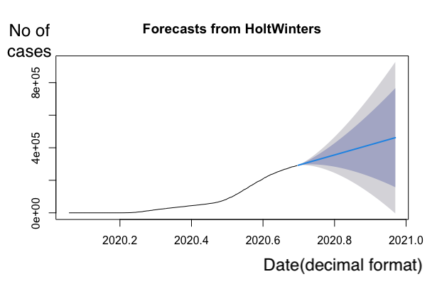

I have used the public data set made avilable by Johns Hopkins University,
Center for Systems Science and Engineering.
The data related to the state of Georgia was analyzed and predictions for the next 100 days
were obtained.
The data set:
https://github.com/CSSEGISandData
Part 1: ETL
The data set was filtered, transformed and a dataframe was created. The data set contains
daily number of confirmed covid cases for each county. The county data was summed to obtain the
state covid cases. A time series object was created using the number of covid cases and the dates.
Part 2: Regression Analysis and Predictions
A time series object was created and the predictions were obtained using the Holt-Winters method.
The dark gray region reperesents the 80% confidence level. Light gray region represents the 95%
confidence level.

Used: ETL, R, Time Series Analysis, Holt-Winters method
Github: https://github.com/lumindak/covid-19-predictions